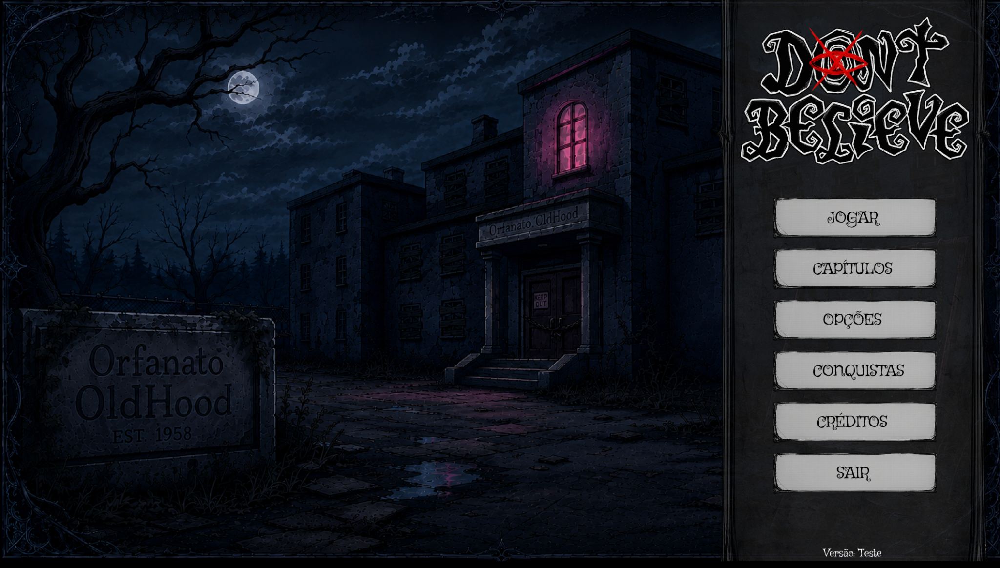

Pausar
Esc
Continuar →
C
CONTROLES
◆
LOCAL MARCADO
Descubra o que existe além do silêncio.
E

Jogar
Capítulos
Opções
Conquistas
Créditos
Sair
CONTINUAR PARTIDA →
0 / 6
VOLTAR AO MENU
JOGAR NOVAMENTE
VER FINAIS DESCOBERTOS
KALI
Outros assuntos
← Voltar
←
Opções anteriores
Mais opções
→
SUAS ESCOLHAS DEIXAM MARCAS
Explorar depois
ESC
▲
◀
▼
▶
FURTIVO
INTERAGIR
DON’T BELIEVE
×
O OBELISCO
OldHood
KALI · LUZITRUISTA
DIÁRIO
J
OBJETOS E VIGILÂNCIA
0
I
PEDIDOS
0
T
MAPA
M
TELA CHEIA
F
SOM OFF
VOLTAR AO JOGO
C / ESC
COMO JOGAR E AJUSTES
MENU PRINCIPAL
JOGO LOCAL · SEM CONEXÃO